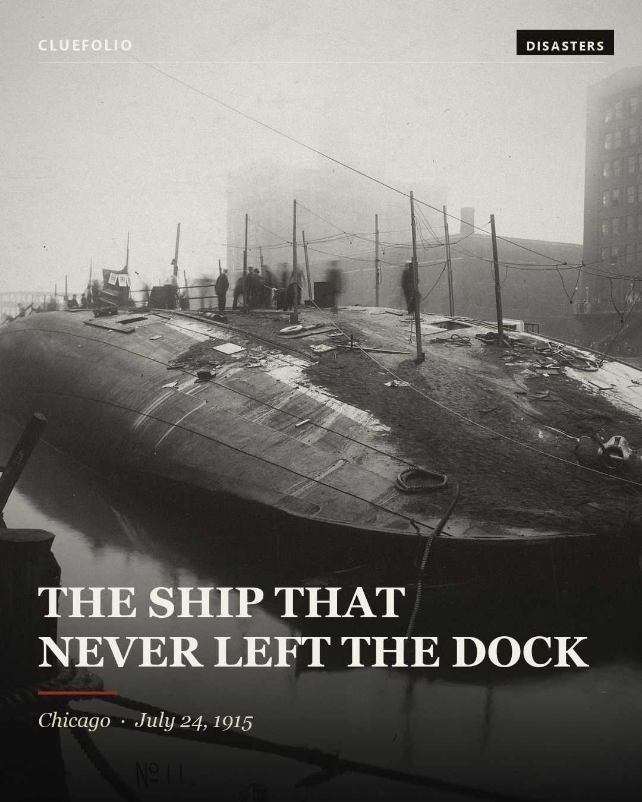
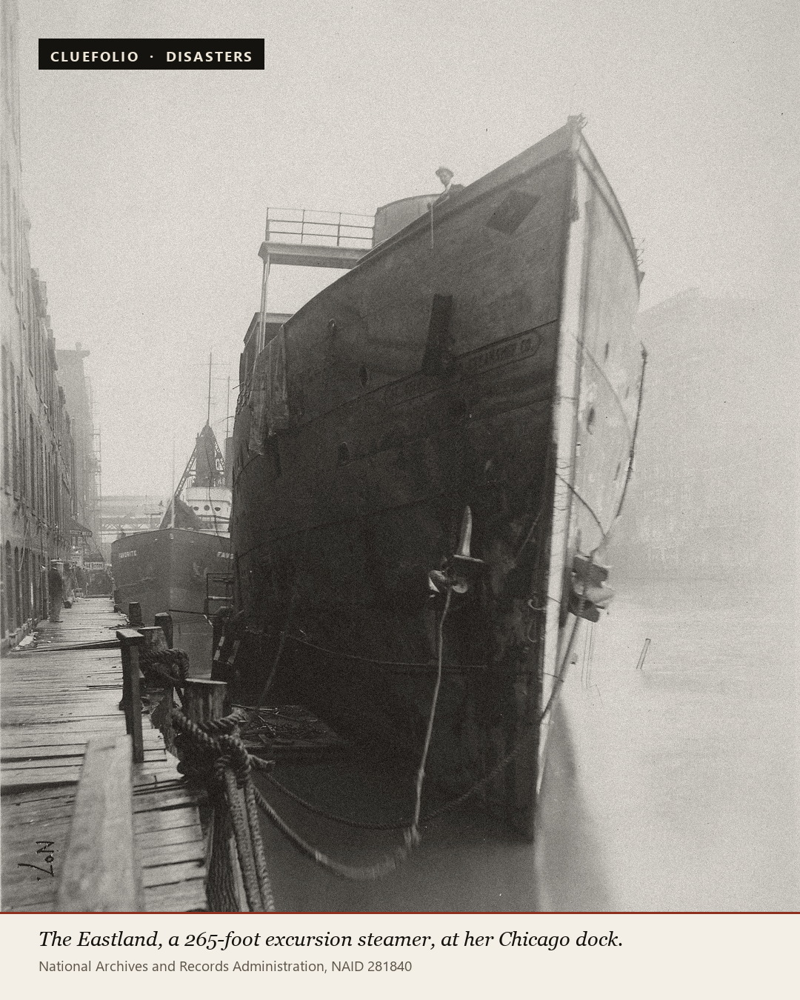
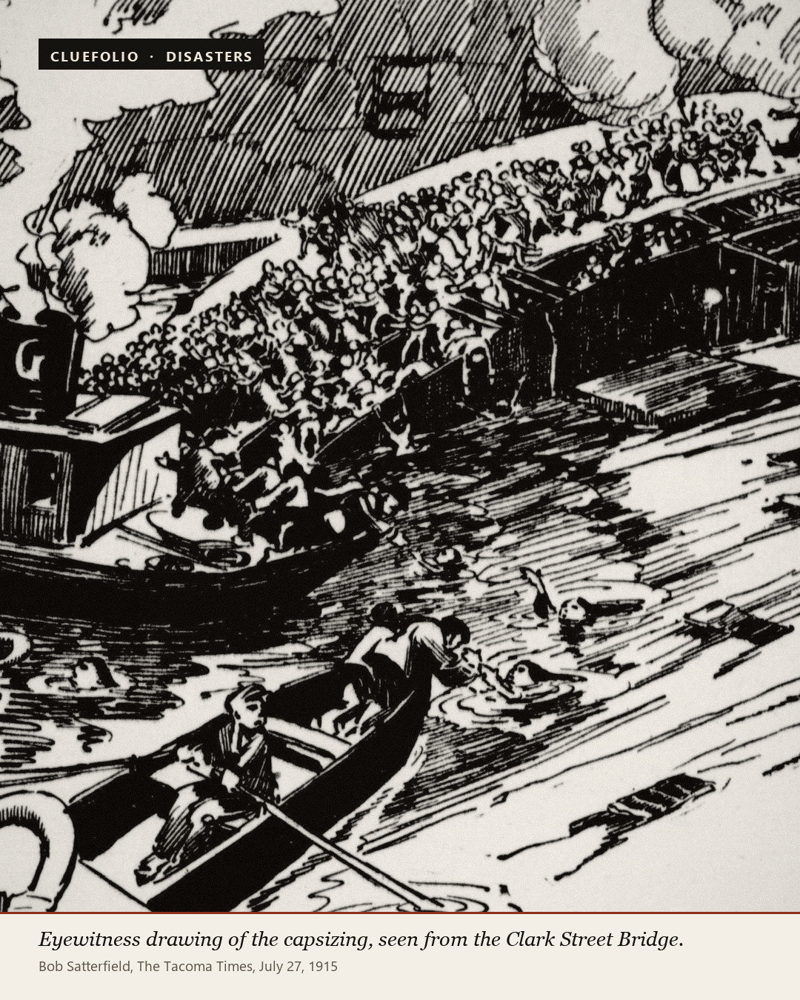
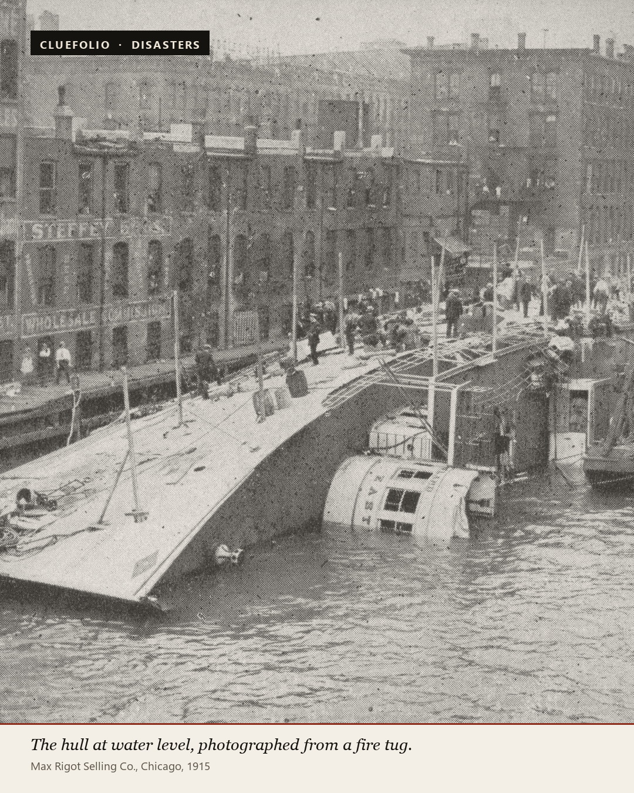
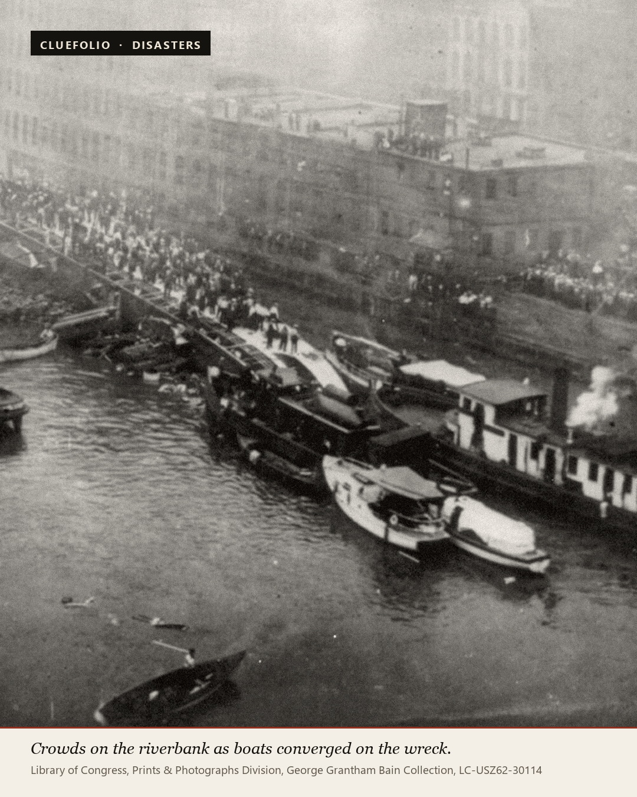
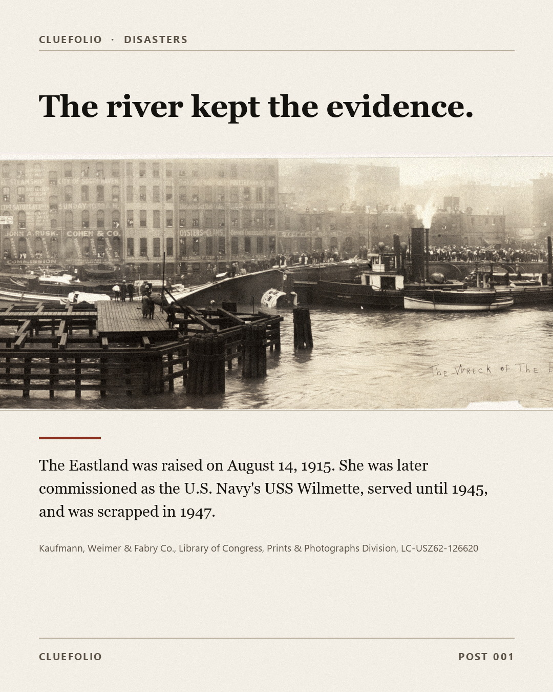

Post 001 · October 21, 2026 · Disasters
The Ship That Never Left the Dock
The SS Eastland, Chicago, July 24, 1915. Six archival frames, in order.
Carousel · 6 frames · click any image to enlarge

National Archives and Records Administration, NAID 281841

National Archives and Records Administration, NAID 281840

Bob Satterfield, The Tacoma Times, July 27, 1915

Max Rigot Selling Co., Chicago, 1915

Library of Congress, Prints & Photographs Division, George Grantham Bain Collection, LC-USZ62-30114

Kaufmann, Weimer & Fabry Co., Library of Congress, Prints & Photographs Division, LC-USZ62-126620
Instagram caption
Platform copy
The Eastland was still tied to the dock when it killed 844 people.
Chicago, July 24, 1915. Shortly after 7 a.m., employees of Western Electric and their families boarded a five-deck excursion steamer bound for a company picnic in Michigan City, Indiana. More than 2,500 people were on board. The gangplank was still down. The ship had not gone anywhere.
It had almost gone over before. In 1904 it nearly capsized with roughly 3,000 people aboard. In 1912 it listed hard in Cleveland. Narrow, fast, and top-heavy, the Eastland had a stability problem its operators knew about.
Then came a reform meant to make ships safer. After the Titanic sank, a 1915 federal law required more lifeboats. To keep its passenger license, the Eastland added boats high on its upper decks. The weight went exactly where the ship could least afford it.
Shortly after 7 a.m., the Eastland lurched and rolled onto its side.
The river there is about 20 feet deep, and the ship came to rest about 20 feet from the wharf. That shallow, narrow gap is why hundreds climbed across the exposed hull and lived — and why hundreds below deck had minutes, not hours.
844 passengers and crew died. 590 were under 25. Twenty-two entire families were wiped out.
A grand jury indicted the owners, the captain, the chief engineer, and federal inspectors. The cases ended without a conviction.
The Eastland was raised weeks later, sold, and eventually commissioned as the Navy's USS Wilmette. She served until 1945 and was scrapped in 1947.
The dock is a short walk from the Loop. The water is 20 feet deep. Most days, nobody looks down.
Photographs: National Archives and Records Administration; Library of Congress, Prints & Photographs Division.
#EastlandDisaster #ChicagoHistory #GreatLakes #MaritimeHistory #ForgottenHistory
Facebook caption
The same story, told for Facebook
On the morning of July 24, 1915, the Eastland was still tied to the dock when it rolled onto its side and killed 844 people.
The Eastland was an excursion steamer. That Saturday it was carrying employees of Western Electric and their families to a company picnic in Michigan City, Indiana. More than 2,500 people came aboard. The gangplank was still down.
The ship had a history. It nearly capsized at its dock in 1904 with about 3,000 people aboard, and it listed severely in Cleveland in 1912. Fast and narrow, the Eastland was top-heavy. The people who ran it knew it had stability problems.
Then a safety reform made those problems worse. After the Titanic sank, a 1915 federal law required more lifeboats. To keep its licensed passenger capacity, the Eastland's operators added lifeboats and rafts high on the upper decks. All that weight sat above the ship's center of gravity.
Shortly after 7 a.m., the Eastland lurched to port and rolled onto its side.
Here is the part that is hard to hold in your head. The ship did not sink. The Chicago River is only about 20 feet deep there, and the hull came to rest about 20 feet from the wharf. Hundreds of people climbed across the exposed side of the ship to the dock and lived.
Hundreds of others were below decks, in the cabins and the dance floor, when the water came in. They had minutes.
844 passengers and crew died, including 590 people under the age of 25. Twenty-two families lost every member.
A grand jury indicted the ship's owners, captain, chief engineer, and federal inspectors. The case was moved to Michigan, where the defendants were found not guilty in February 1916, and the court refused extradition back to Illinois. No criminal trial was ever held in Chicago. No one was convicted.
The Eastland was raised on August 14, 1915. She was sold, and in 1918 she was commissioned as the U.S. Navy's USS Wilmette, serving until 1945 before being scrapped.
The site is a few blocks from the Loop, on a stretch of river where tour boats now run. The water is 20 feet deep. Most days, nobody looks down.
Photographs: National Archives and Records Administration; Library of Congress, Prints & Photographs Division.
#EastlandDisaster #ChicagoHistory #MaritimeHistory #GreatLakes
Accessibility
Alt text
One description per image. Written for screen-reader users, not for search engines. The alt text lives in assets/manifest.json as the alt_text field for each asset.
01 — Cover
A long passenger steamship lies completely on its side in a narrow city river, its dark hull exposed above the waterline. A few small figures stand on the upturned hull, and brick warehouses line the shore.
02 — The ship
A tall white excursion steamship with two funnels and several decks sits upright at a city dock, seen bow-on so its full height fills the frame.
03 — The moment
A dramatic black-and-white newspaper drawing shows a large steamship tilting sharply toward the water as tiny figures scramble on its decks and swim below, watched from a bridge.
04 — The hull
A huge dark hull fills the frame at water level, seen from a boat on the river. The overturned steamship's curved side rises above the water beside a stone river wall.
05 — The rescue
Dozens of people stand on the exposed side of a capsized steamship while small rowboats and launches crowd the water around it. A dense crowd watches from the riverbank.
06 — The wreck
A wide sepia photograph shows a city river crowded with boats and onlookers, with the exposed hull of a capsized steamship beside a bridge and tall warehouses.
Package
The files and the numbers
| Field | Value |
|---|---|
| Status | READY FOR HUMAN PUBLISHING |
| Images | 6 × 1080×1350 JPEG, sRGB |
| Instagram caption | 1,801 characters · 5 hashtags |
| Facebook caption | 2,252 characters · 4 hashtags |
| Viral Readiness | 37 / 40 (publish floor 32, flagship 36) |
| AI imagery | None. All six assets are authentic 1904–1915 documents. |
| Rights | Public domain in the United States, or no known restrictions |
| Cost | $0 |
| Recommended window | Tue/Wed 12:00–13:00 ET, or Sun 19:00–21:00 ET |